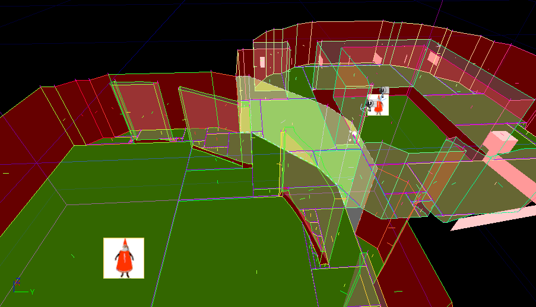
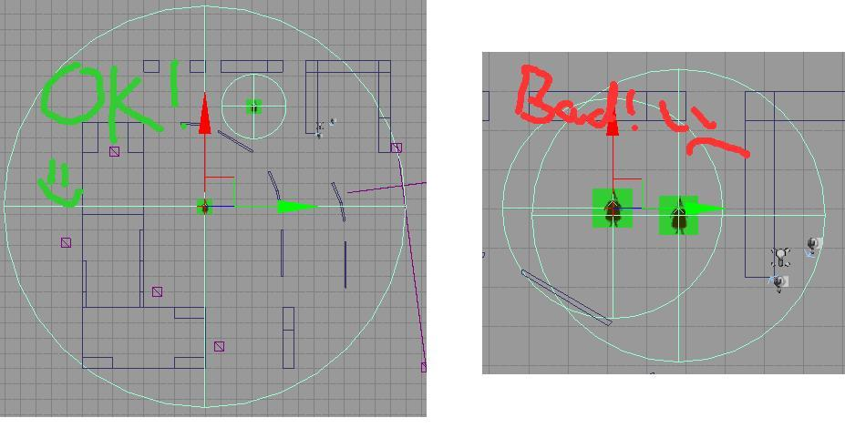
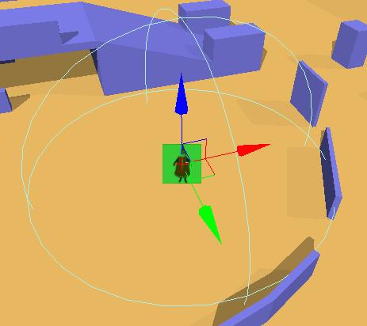
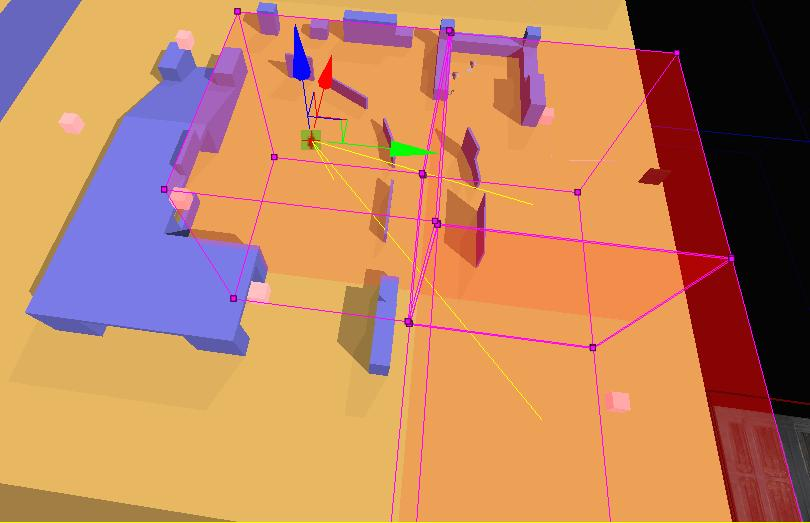
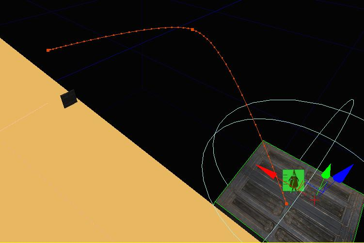
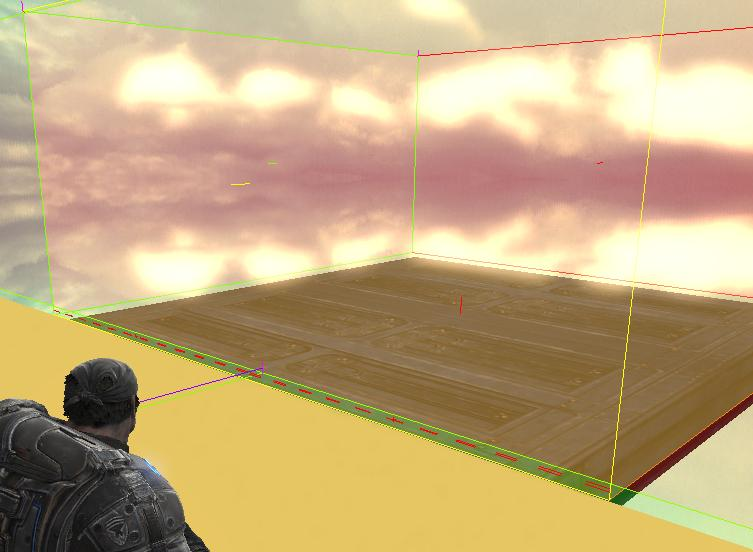

UDN
Search public documentation:
UsingNavigationMeshesCH
English Translation
日本語訳
한국어
Interested in the Unreal Engine?
Visit the Unreal Technology site.
Looking for jobs and company info?
Check out the Epic games site.
Questions about support via UDN?
Contact the UDN Staff
日本語訳
한국어
Interested in the Unreal Engine?
Visit the Unreal Technology site.
Looking for jobs and company info?
Check out the Epic games site.
Questions about support via UDN?
Contact the UDN Staff
使用导航网格物体
概述
Pylon（双锥晶塔）
 整个过程实际上只是将一个称为 Pylon 的特定 actor 类型放置在您的关卡中。该双锥晶塔会做两件事；首先，它会通知自动生成系统从哪里开始探查（这是探查种子点），而第二件事是通知自动系统距离要探查该双锥晶塔还有多远。
例如，下面的屏幕截图中，地图中央放置了一个双锥晶塔，而且在要探查的双锥晶塔内提供了一个围绕它的小半径
整个过程实际上只是将一个称为 Pylon 的特定 actor 类型放置在您的关卡中。该双锥晶塔会做两件事；首先，它会通知自动生成系统从哪里开始探查（这是探查种子点），而第二件事是通知自动系统距离要探查该双锥晶塔还有多远。
例如，下面的屏幕截图中，地图中央放置了一个双锥晶塔，而且在要探查的双锥晶塔内提供了一个围绕它的小半径
 在这里要记住的要点是单独的双锥晶塔不代表整个 AI 可移动空间。它仅仅是可移动空间中的一部分。您的实际关卡将包含一些全部都链接在一起的双锥晶塔。将为每个双锥晶塔生成的网格物体保存在该双锥晶塔内部，因此像这样分裂网格物体会使您在任何指定时间控制网格物体的哪一部分载入和载出。
在这里要记住的要点是单独的双锥晶塔不代表整个 AI 可移动空间。它仅仅是可移动空间中的一部分。您的实际关卡将包含一些全部都链接在一起的双锥晶塔。将为每个双锥晶塔生成的网格物体保存在该双锥晶塔内部，因此像这样分裂网格物体会使您在任何指定时间控制网格物体的哪一部分载入和载出。
将 Pylons 链接在一起
使双锥晶塔彼此链接十分容易。您只需要确保您希望链接有点重叠的双锥晶塔的探查区域。例如，下面是两个双锥晶塔，它们的扩展半径稍微重叠： 这会促成根据两个球体之间的重叠线链接的两个网格物体。这是最终网格物体的截图：
这会促成根据两个球体之间的重叠线链接的两个网格物体。这是最终网格物体的截图：

注意：光源黄色填充的垂直表面顺着两个双锥晶塔之间的表面。这表示这两个双锥晶塔之间是松散的链接。（如果加载了两个双锥晶塔，松散链接的意思是 AI 可以在它们之间行走。浅谈在其他双锥晶塔内部的双锥晶塔
有一个双锥晶塔完全在另一个双锥晶塔的扩展区域中，这是完全可以的。将会发生的是会首先创建较小的双锥晶塔，然后在较小的双锥晶塔周围创建较大的双锥晶塔，适当地对它进行链接。*但是！* 请记住您永远不得有两个同时都互相完全在对方内部的双锥晶塔。用图片进行说明更容易理解：
这不会使您的计算机熔化，但是在这种情况下无法创建其中一个双锥晶塔，所以您可能最后没有获得您预期想要的网格物体。为 Pylon 设置扩展区域
有两种方法可以让双锥晶塔知道它应有的边界。默认且最简单的方法就是半径。如果您首先将双锥晶塔放置在关卡中，那么您会看到围绕它绘制的球体，它就像一个点光源。这个球体内部就是双锥晶塔要探查的地方。
备选方案是为这个双锥晶塔提供一个要探查的双锥晶塔内部体积的列表。 游戏/<游戏名称>/目标文件夹 包含可以编译游戏的平台的“target projects（目标项目）”。要设置这个选项，您可以选择该双锥晶塔，然后在属性窗口中手动将体积插入到列表，或者像酷小子们 一样使用 snazy 方法。这个 snazy 方法是选择双锥晶塔，然后选择所有您想要其开发内部的体积，并按下 Ctrl+Shift+L。这会通知双锥晶塔将您现在已经选择的所有体积添加到它的列表中。 选择的所有体积和双锥晶塔： 链接到双锥晶塔的所有体积：
（注意：选择了双锥晶塔后，会将任何链接的体积绘制为半透明，而且将会绘制黄色线将双锥晶塔链接到该体积，这里可以帮助您看到该双锥晶塔被链接到了哪些体积）
链接到双锥晶塔的所有体积：
（注意：选择了双锥晶塔后，会将任何链接的体积绘制为半透明，而且将会绘制黄色线将双锥晶塔链接到该体积，这里可以帮助您看到该双锥晶塔被链接到了哪些体积）

此外，要取消链接双锥晶塔中的体积，只需选择该双锥晶塔，然后选择您想要取消链接的体积并按下 Ctrl+Shift+L，它将会触发到该双锥晶塔的链接。 （您还可以只是从双锥晶塔的 actor 属性 ExpansionVolumes 列表中将其删除）动态 Pylon
 动态双锥晶塔就是可以移动的双锥晶塔。它可以用于诸如电梯或移动的平台这种您希望 AI 可以继续前进，以及转移/离开的地方。在下面的示例中以这个平台为例：
动态双锥晶塔就是可以移动的双锥晶塔。它可以用于诸如电梯或移动的平台这种您希望 AI 可以继续前进，以及转移/离开的地方。在下面的示例中以这个平台为例：

这个平台上的动态双锥晶塔会在其半径内部创建一个网格物体，但是重点是注意该网格物体与 Dynamic Pylon（动态双锥晶塔）相关，它现在被附加到了这个移动的平台。这意味着该平台移动时，这个网格物体也会移动。 只要平台已经停止移动，那么该动态双锥晶塔会自动将自己链接到该区域中的其他网格物体。
只要平台已经停止移动，那么该动态双锥晶塔会自动将自己链接到该区域中的其他网格物体。

（注意表示交叉双锥晶塔边缘的红色短划线） 使用动态双锥晶塔需要记住的最重要的事情是为动态双锥晶塔创建的网格物体的任何部分都将会随它一起移动！ 所以注意您让动态双锥晶塔扩展的地方。 就是这样。您学会了将网格物体添加到您的关卡。 下面是一些有关调试绘制的信息以及它所代表的所有含义：调试绘制